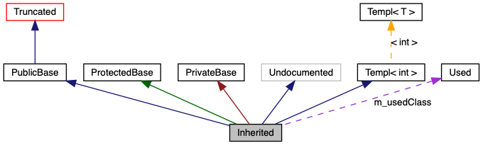

Graph Legend
This page explains how to interpret the graphs that are generated by doxygen.
Consider the following example:
/*! Invisible class because of truncation */
class Invisible { };
/*! Truncated class, inheritance relation is hidden */
class Truncated : public Invisible { };
/* Class not documented with doxygen comments */
class Undocumented { };
/*! Class that is inherited using public inheritance */
class PublicBase : public Truncated { };
/*! A template class */
template<class T> class Templ { };
/*! Class that is inherited using protected inheritance */
class ProtectedBase { };
/*! Class that is inherited using private inheritance */
class PrivateBase { };
/*! Class that is used by the Inherited class */
class Used { };
/*! Super class that inherits a number of other classes */
class Inherited : public PublicBase,
protected ProtectedBase,
private PrivateBase,
public Undocumented,
public Templ<int>
{
private:
Used *m_usedClass;
};
This will result in the following graph:

The boxes in the above graph have the following meaning:
- A filled gray box represents the struct or class for which the graph is generated.
- A box with a black border denotes a documented struct or class.
- A box with a gray border denotes an undocumented struct or class.
- A box with a red border denotes a documented struct or class forwhich not all inheritance/containment relations are shown. A graph is truncated if it does not fit within the specified boundaries.
The arrows have the following meaning:
- A dark blue arrow is used to visualize a public inheritance relation between two classes.
- A dark green arrow is used for protected inheritance.
- A dark red arrow is used for private inheritance.
- A purple dashed arrow is used if a class is contained or used by another class. The arrow is labelled with the variable(s) through which the pointed class or struct is accessible.
- A yellow dashed arrow denotes a relation between a template instance and the template class it was instantiated from. The arrow is labelled with the template parameters of the instance.